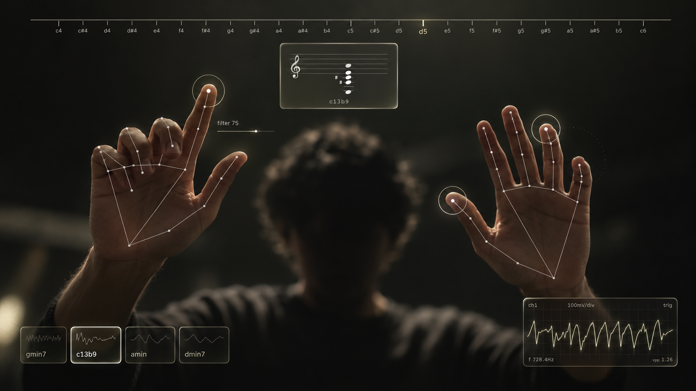
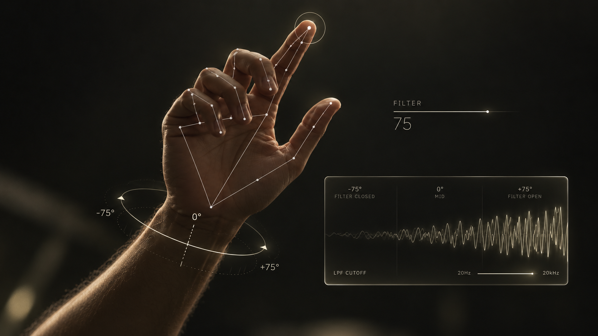
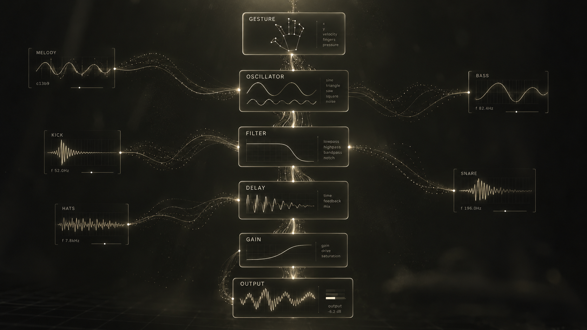

HAND-TRACKED SYNTHESIZER / 2026
No keyboard. No MIDI. Just your hands.
No knobs required.


Hand tracking runs locally.
Audio runs locally.
There is no backend.
Play music in the air.
ENTER INSTRUMENT github.com/Piyushhhhh/voidkeys